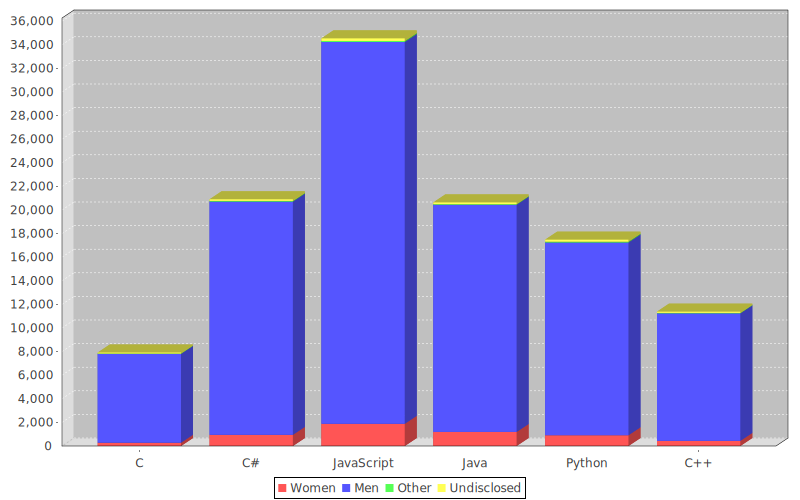
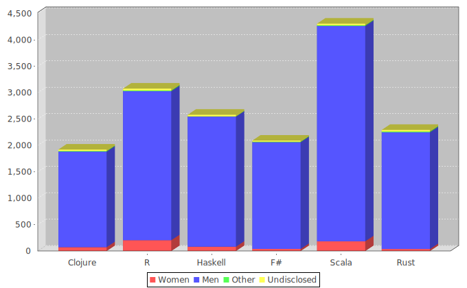
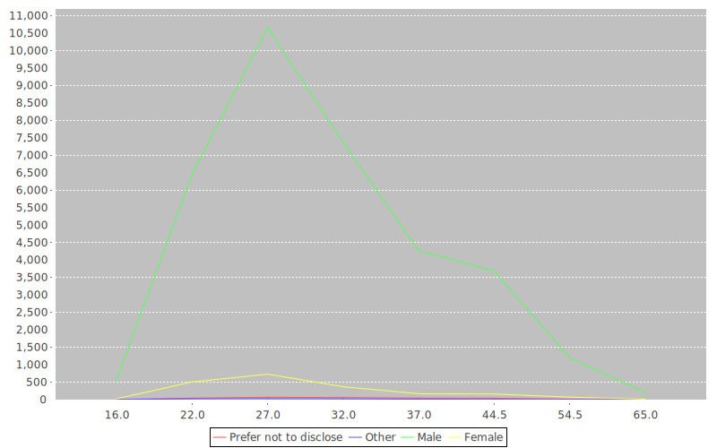

Graphs for data
Gender
Language Usage
The first thing I wanted to do was chart the gender distribution inside each programming language. This is just the raw headcount. I wanted to measure interest not just usage, so I have taken from both tech_want and tech_do columns for this data
Here is another showing functional languages. It is worth noting that this is from a smaller data pool
Median Ages
Line showing median ages of all survey participants
